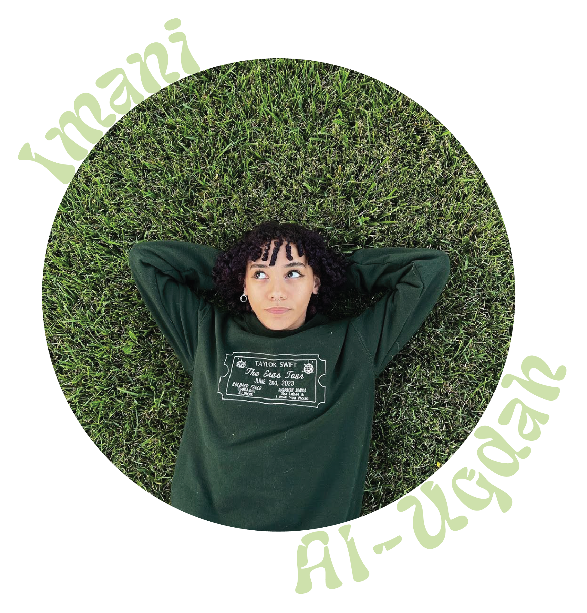
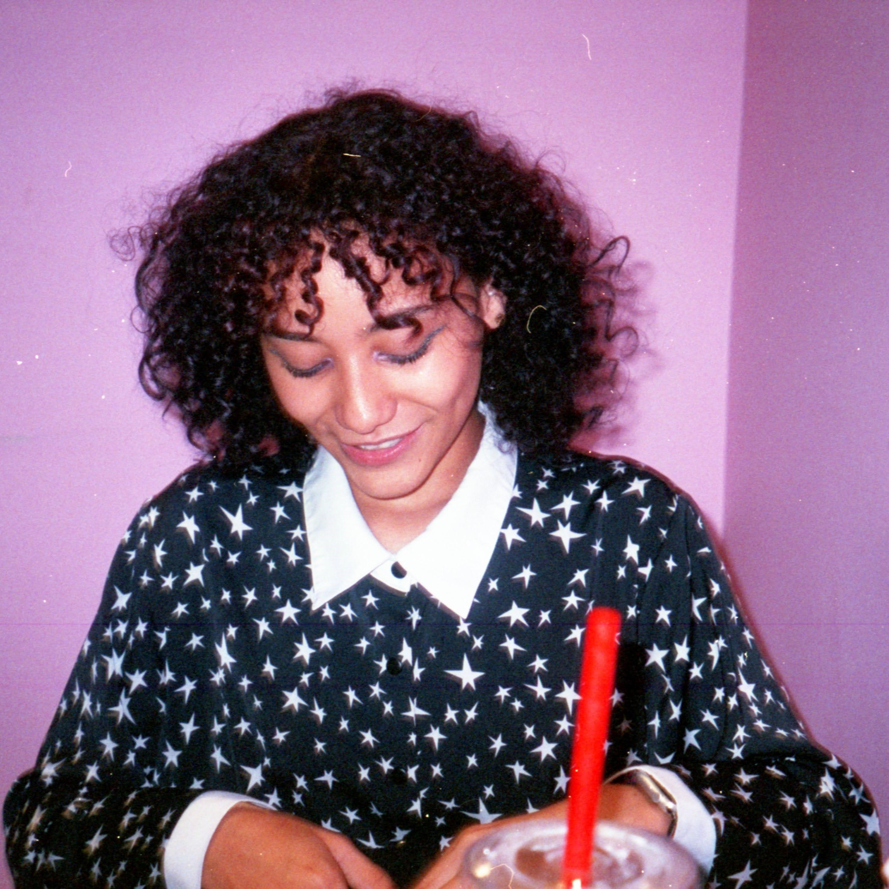

![A mockup of a self portrait with a purple hue over it featuring an 8-ball with a brain overlayed. The left side is completly taken up by a side profile photo of me. Hands are coming out of the 8-ball, one is coming from the top of the screen and one is pointed up from the bottom towards the 8-ball. Two hands are holding photos of me, one is holding an eye near the mouth of the side profile photo, one is flicking the eye of the side profile photo. There is a photo of me crouching on a black tooth with a hand coming out from behind pulling a piece of hair from my mouth which is being held by the hand at the top. The background is black with stars and a large spiral overlayed. Random things are floating in the blank spaces like a cat skull, CD, vinyl record, frog, and letterpress letters spelling out 'virgo', 'leo', 'libra', & 'design whore'.](images/Self_Portrait_Mockup.png)
About Me

Hi, I’m Imani Al-Uqdah! I’m a Graphic Design major with an Art History minor at Illinois State University, where I explore visual storytelling through both digital and traditional media. Outside of class, I enjoy photography, fiber art, and videography, all of which influence my creative approach.
I’m proficient in Adobe Illustrator, Photoshop, and InDesign, and I love anything that lets me experiment—whether it’s decorating my space or cutting and arranging collages. If you’d like to connect or have a project in mind, feel free to reach out!